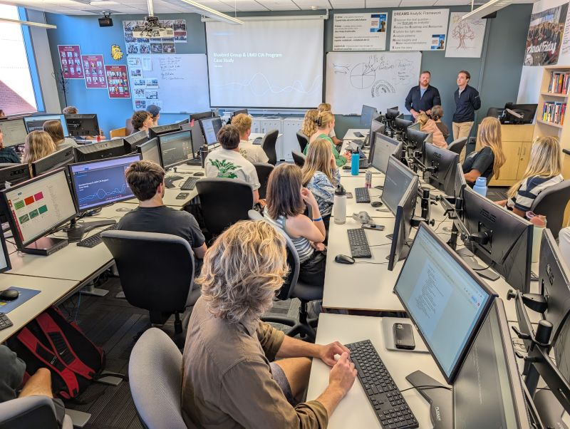

State-of-the-art lab
Gain 24/7 access to an exclusive analytics lab. Master industry-standard software like Tableau, SQL, SAS, R, and Python.
Enterprise Data Careers
The Consumer Insights & Analytics Program at the University of Minnesota Duluth prepares students to turn data into decisions. With real client projects, industry internships, and a selective cohort experience, CIA graduates enter the workforce ready to lead.
Program Highlights
Gain 24/7 access to an exclusive analytics lab. Master industry-standard software like Tableau, SQL, SAS, R, and Python.
Through our selective application process, you'll complete specialized courses, projects, and off-site competitions together.
Work directly on real-world assignments with corporate sponsors such as Target, Hormel, and maurices.

The CIA Lab
The Consumer Insights & Analytics lab is exclusive to CIA students — a dedicated space stocked with industry-standard workstations and software. Whether you're prepping for a client presentation or running analysis at midnight before a competition, the lab is always open.
Why Consumer Insights
As decision-making becomes more actionable, our program answers three core questions:
Quick Path
Learn the program's purpose, core values, and the pillars that shape every CIA student's experience.
Explore the career tracks, skill areas, and coursework that CIA graduates leverage in the workforce.
See the companies, internship partners, and alumni employers connected to the CIA network.
Get the steps, checklist, and links you need to join the next CIA cohort.